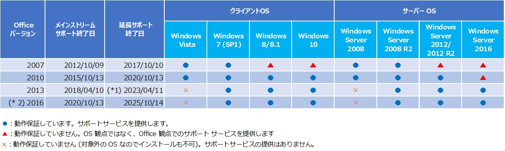

(※ 2017 年 2 月 23 日に Japan Office Support Blog に公開した情報のアーカイブです。)
こんにちは、Office サポート チームです。
本記事では、弊社が動作保証およびサポートサービスを提供している Windows と Office の組み合わせについて案内します。
メモ : 本稿は、2017 年 2 月 23 日時点の情報になります。

*1 Office 365 の Office 2013 は、2017/2/28 でサポートサービスの提供を終了します。Office 365 以外の Office 2013 は延長サポート終了日までサポートサービスを提供します。
Office 365 ProPlus 2013 のサポートは 2017 年 2 月 28 日に終了します
https://support.microsoft.com/ja-jp/kb/3199744
*2 Office アプリケーションの起動などのタイミングで、エラーが発生することがあります。この事象の詳細を以下サイトで公開しておりますのでご参照ください。
Office 2016 アプリケーション起動時に「コンピューターに api-ms-win-crt-heap-|1-1-0.dll がないため、プログラムを開始できません。」等のメッセージが表示される現象について
https://blogs.technet.microsoft.com/officesupportjp/2018/06/22/office2016kb2999226/
なお、OS の延長サポートが終了し、かつ、Office はサポート対象期間内の場合は、Office 観点でのサポートサービスを提供します。
「Office 観点」とは、Office 製品に関連する調査/切り分けを行います。
他の OS 上でも再現すると仮定したサポートサービスを提供します。
調査の過程で延長サポートが終了している OS 側に関連する事象であると判明した場合は、それ以上調査しません。
製品をお使いの期間にわたってどのようなサポートが受けられるかについてガイドラインを公開しております。ぜひご参照ください。
Microsoft ライフサイクル ポリシー
https://support.microsoft.com/ja-jp/lifecycle
[補足]
上記の Office と Windows の組み合わせでサポート対象としている構成においても、
Office をサーバーサイドオートメーション (非対話型オートメーション) で利用することを、弊社ではサポートしておりません。
Office サーバーサイドオートメーションの例 :
- ASP.NET から Excel を呼び出し、データを挿入する。
- Task スケジューラーで定期的に Word を呼び出し、印刷処理を実行する。
Office のサーバーサイド オートメーションについては以下の情報をご確認ください。
Office のサーバーサイド オートメーションについて
https://support.microsoft.com/ja-jp/help/257757
Office サーバー サイド オートメーションの危険性について
https://blogs.msdn.microsoft.com/office_client_development_support_blog/2012/04/11/office-2/
また、サポート対象外の構成やご質問の内容につきまして、以下の Blog で公開しておりますので、併せてご確認ください。
サポート対象外の構成でのトラブルシュート (切り分けの進め方)
https://blogs.msdn.microsoft.com/office_client_development_support_blog/2017/02/14/troubleshooting-for-not-supported-cases/
※ 本情報の内容 (添付文書、リンク先などを含む) は、作成日時点でのものであり、予告なく変更される場合があります。